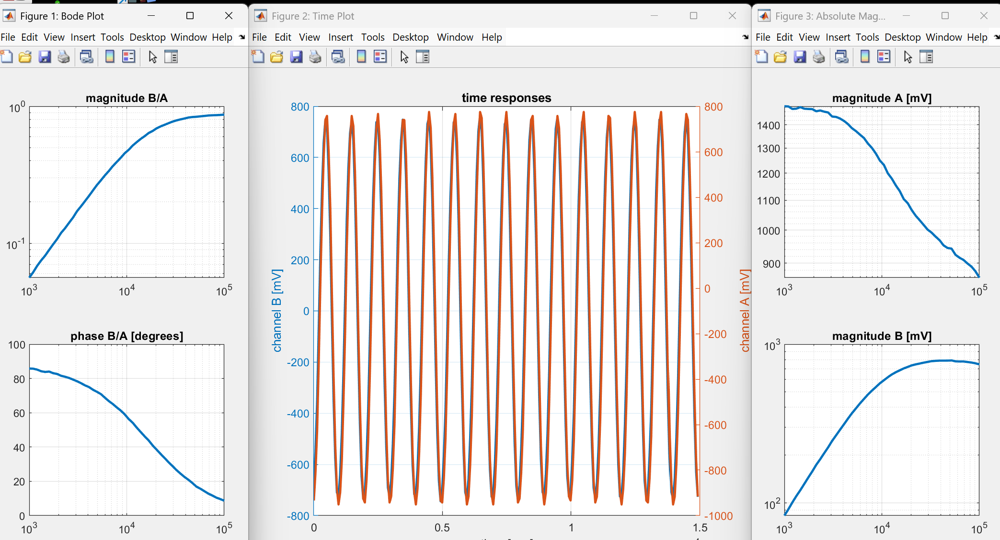

FRA to Display Custom Results from USB Oscilliscope in Matlab
When utilizing the Picoscope 2204A, the picoscope app’s results can be difficult to understand and even exclude useful infortmation. This matlab interpreter ranges the frequencies of a forcing function automatically and allows for any data that the device retrieves to be used. In this case specifically, the following was output:

close all; clear all; set(0,'defaultlinelinewidth',2)
npts = 50;
fmin = 1000;
fmax = 100000;
freqList = logspace(log10(fmin),log10(fmax),npts);
A0 = 3000;
A1 = 3000;
% amplitude of excitation in peak-to-peak mV
ampList = A0 + (A1-A0)*(freqList-fmin)/(fmax-fmin);
% number of periods over which to integrate for each frequency
numPeriodList = 15*ones(npts,1);
% number of samples per period for each frequency
numSamplesPerPeriodList = 15*ones(npts,1);
freqRespMeasure(freqList,ampList,numPeriodList,numSamplesPerPeriodList);
%% ---------------------
function [freq,magBA,phaseBA,Ac,Bc] = freqRespMeasure(freqList,ampList,numPeriodList,numSamplesPerPeriodList)
try
evalin('base', 'PS2000Config');
ps2000Enuminfo = evalin('base', 'ps2000Enuminfo');
ps2000 = icdevice('picotech_ps2000_generic.mdd');
disp 'connecting'
connect(ps2000);
disp(ps2000Enuminfo.enPS2000Range)
signalGenerator = get(ps2000, 'Signalgenerator');
signalGenerator = signalGenerator(1);
blockGroup = get(ps2000, 'Block');
blockGroup = blockGroup(1);
invoke(blockGroup, 'getTimebases');
bodeFig = figure("Name","Bode Plot", "Position",[20, 20, 300, 600]);
timeFig = figure("Name", "Time Plot", "Position",[320, 20, 600, 600]);
absMagFig = figure("Name", "Absolute Magnitudes", "Position",[920, 20, 300, 600]);
nA = 3;
nB = 3;
for kk = 1:length(freqList)
freq(kk) = freqList(kk);
numPeriods = numPeriodList(kk);
numSamplesPerWave = numSamplesPerPeriodList(kk);
set(signalGenerator, 'peakToPeakVoltage', ampList(kk));
set(signalGenerator, 'startFrequency', freq(kk));
period = 1/freq(kk);
blockIntUs = 1e6/freq(kk)/numSamplesPerWave;
[status.sigGenSimple] = invoke(signalGenerator, 'setSigGenBuiltInSimple', ps2000Enuminfo.enPS2000WaveType.PS2000_SINE);
[samplingIntervalUs, maxBlockSamples] = invoke(blockGroup, 'setBlockIntervalUs', blockIntUs);
set(blockGroup, 'timeUnits', ps2000Enuminfo.enPS2000TimeUnits.PS2000_NS);
numSamples = round(((numPeriods*period/samplingIntervalUs)*1e6));
set(ps2000, 'numberOfSamples', numSamples)
disp("getting reasdy to collect...")
rangeANoGood = true;
rangeBNoGood = true;
while(rangeANoGood | rangeBNoGood)
[status.setChA] = invoke(ps2000, 'ps2000SetChannel', 0, 1, 1, nA);
[status.setChB] = invoke(ps2000, 'ps2000SetChannel', 1, 1, 1, nB);
[bufferTimes, bufferChA, bufferChB, numDataValues, timeIndisposedMs] = invoke(blockGroup, 'getBlockData');
maxA = max(abs(bufferChA));
maxB = max(abs(bufferChB));
disp( ['A range=' num2str(numToMv(nA)) ' maxA=' num2str(maxA) ] );
if (maxA <= numToMv(nA-1) & nA>2)
nA = nA-1;
disp(['ranging A down to ' num2str(numToMv(nA))]);
elseif (maxA==numToMv(nA) & nA<10)
nA = nA+1;
disp(['ranging A up to ' num2str(numToMv(nA))]);
else
disp('range A fixed');
rangeANoGood = false;
end
disp( ['B range=' num2str(numToMv(nB)), ' maxB=' num2str(maxB) ] );
if (maxB <= numToMv(nB-1) & nB>2)
nB = nB-1;
disp(['ranging B down to ' num2str(numToMv(nB))]);
elseif (maxB==numToMv(nB) & nB<10)
nB = nB+1;
disp(['ranging B up to ' num2str(numToMv(nB))]);
else
disp('range B fixed');
rangeBNoGood = false;
end
end
t = [0: length(bufferChA)-1]'*samplingIntervalUs*1e-6;
figure(timeFig);
yyaxis left
plot(t, bufferChB)
ylabel('channel B [mV]')
yyaxis right
plot(t, bufferChA)
ylabel('channel A [mV]')
xlabel('time [sec]')
grid on; drawnow;
title('time responses')
% integrate the signals each against cos and sin
Breal(kk) = 2*trapz(t, double(bufferChB).*cos(2*pi*freqList(kk)*t))/t(end);
Bimag(kk) = -2*trapz(t, double(bufferChB).*sin(2*pi*freqList(kk)*t))/t(end);
Areal(kk) = 2*trapz(t, double(bufferChA).*cos(2*pi*freqList(kk)*t))/t(end);
Aimag(kk) = -2*trapz(t, double(bufferChA).*sin(2*pi*freqList(kk)*t))/t(end);
% assemble each into a complex number
Ac(kk) = Areal(kk)+i*Aimag(kk);
Bc(kk) = Breal(kk)+i*Bimag(kk);
% get magnitude and phase
magBA(kk) = abs(Bc(kk)/Ac(kk));
phaseBA(kk) = angle(Bc(kk)/Ac(kk));
figure(absMagFig);
subplot(2,1,1);
loglog(freq, abs(Ac))
grid on;
title('magnitude A [mV]')
subplot(2,1,2);
loglog(freq, abs(Bc))
grid on;
title('magnitude B [mV]')
figure(bodeFig);
subplot(2, 1, 1);
loglog(freq, magBA);
grid on;
title('magnitude B/A')
subplot(2, 1, 2);
semilogx(freq,180/pi*unwrap(phaseBA));
grid on;
title('phase B/A [degrees]')
end
stopStatus = invoke(ps2000, 'ps2000Stop');
disconnect(ps2000);
delete(ps2000);
catch E
if exist('ps2000','var') && isvalid(ps2000)
disconnect(ps2000);
delete(ps2000);
end
rethrow(E);
end
end
%%------------------------------------------------------------------------
function [A, B] = getAB(s, t, f)
A = 2*trapz(t, s.*cos(2*pi*f*t))/t(end);
B = 2*trapz(t, s.*sin(2*pi*f*t))/t(end);
end
%%
function n = numToMv(input)
if input == 0
n = 10;
elseif input == 1
n = 20;
elseif input == 2
n = 50;
elseif input == 3
n = 100;
elseif input == 4
n = 200;
elseif input == 5
n = 500;
elseif input == 6
n = 1000;
elseif input == 7
n = 2000;
elseif input == 8
n = 5000;
elseif input == 9
n = 10000;
elseif input == 10
n = 20000;
elseif input == 11
n = 50000;
end
endLast edited: October 11, 2026